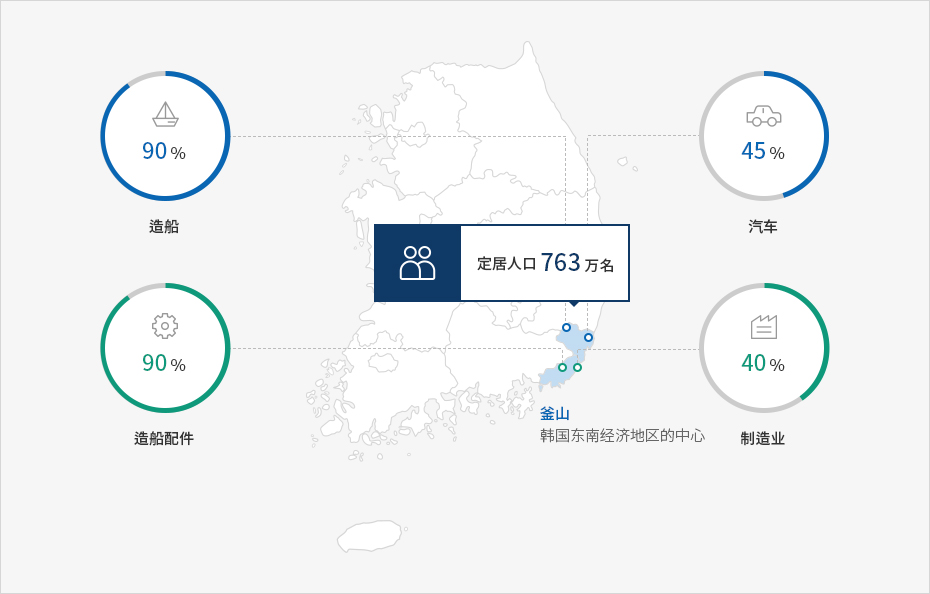
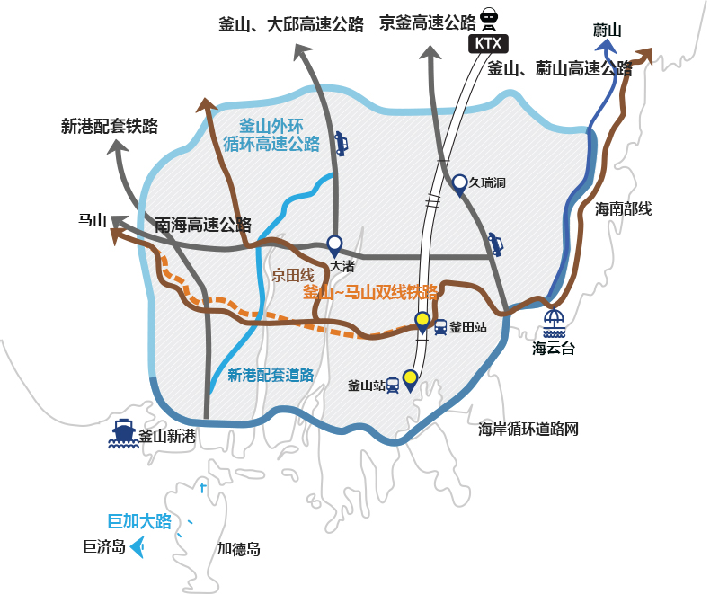
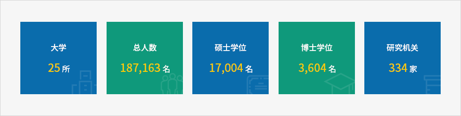

创业环境优越的城市
- Home
- 投资优势
- 创业环境优越的城市
东南经济圈的中心
釜山是东南经济圈的物流、经济中心。作为韩国产业中心，在具备763万名定居人口的东南经济地区，釜山的造船占90%、船舶配件的生产占90%、汽车生产占45%、制造业占40%



最佳的交通基础设施
釜山具备连接国内外各国各地的陆地、航空、海上交通体系，提供连接海洋和大陆的最佳交通基础设施，提高企业的交通便利性，提供减少物流成本等优惠。


优秀的人力资源
釜山拥以360万人口和具竞争力的教育基础设施，拥有十分丰富的人力资源。在釜山有25所大学、334家研究机构以及Fraunhofer应用技术研究所、INI-GraphicsNet、Rolls-Royce大学技术中心、Loyd’s Register Foundation Research Center of Excellence、APEC气候中心等世界优秀研发中心。


※ 2012年